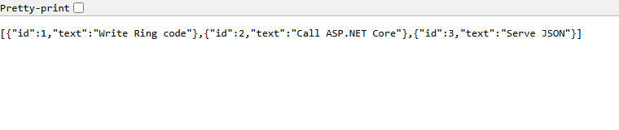

ASP.NET Core
A Kestrel web server whose routes are Ring functions — HTML pages, JSON APIs, forms — plus all of the ASP.NET Core classes for everything else.
A web server in a few lines#
load "dotnet.ring"
using { "RingDotNet.Web" } # starts the ASP.NET Core mode and loads the web server
oServer = new WebServer("http://localhost:5080")
oServer.onGet("/","home")
oServer.onPost("/api/echo","echo")
oServer.run() # serves until stop()
func home oRequest
return "<h1>Hello</h1>" + oRequest.path()
func echo oRequest
return [201,"text/plain","you sent " + oRequest.body()]using { "RingDotNet.Web" } starts the ASP.NET Core runtime and loads the web server of RingDotNet (it calls dnUseWeb() for you). A handler is a Ring function that receives the request and returns the response.

Handlers and responses#
A handler returns one of:
| Return value | Response |
|---|---|
| a text | status 200, text/html |
[status, contentType, text] | exactly that |
webJson(value) | status 200, application/json |
webJson turns a Ring list into a JSON array and a list of [name, value] pairs into a JSON object (nested values too):
func listTodos oRequest
aList = []
for aTodo in aTodos
aList + [["id",aTodo[1]],["text",aTodo[2]]]
next
return webJson(aList)
The request#
| Method | Returns |
|---|---|
oRequest.method() | "GET", "POST" ... |
oRequest.path() | /api/todos |
oRequest.queryString() | ?id=1 |
oRequest.query("id") | one query value |
oRequest.body() | the body as text |
oRequest.header("Accept") | a request header |
oRequest.form("name") | a form field of a POST |
oRequest.setHeader(name, value) | add a response header |
oRequest.context() | the ASP.NET HttpContext, for everything else |
The WebServer#
| Method | Does |
|---|---|
new WebServer(url) | starts Kestrel; port 0 picks a free port |
onGet(path, handler), onPost, onPut, onDelete | routes (route(method, path, handler) for any method) |
notFound(handler) | the handler for unknown paths (default: Not found: GET /x) |
url() | the real address (when the port was 0) |
run() | serve until stop() |
serveOne(milliseconds) | handle one waiting request; true if one was handled |
stop(), close() | stop serving, stop the server |
An error raised by a handler becomes a 500 response with the message. nRequests counts the requests served.
One Ring thread#
Kestrel runs on .NET threads and Ring code may only run on the Ring thread. So the requests are queued and serveOne() / run() take them off the queue on the Ring thread. This is the reason you can use any Ring code and global state in a handler without locks — and also why handlers do not run in parallel.
You can mix serving with your own loop (for example next to a GUI: name "System.Windows.Forms" and "RingDotNet.Web" in the same using block, or call dnUseAll()):
while true
oServer.serveOne(100) # handle a request if one arrives within 100 ms
doOtherWork()
endA complete application#
samples/UsingDotNet/applications/WebApi is a to-do list with a web page and a JSON API. It tests itself by calling its own server with HttpClient:
samples/UsingDotNet/applications/WebApi/WebApi.ring
# A small web application written in Ring on ASP.NET Core: a to-do list with a web page and a JSON API
# ring WebApi.ring then open http://localhost:5080/
# GET /api/todos POST /api/todos (the text is the body) DELETE /api/todos?id=1
load "dotnet.ring"
using {
"System"
"System.Net.Http"
"System.Threading.Tasks"
"RingDotNet.Web"
}
aTodos = [] # [id, text]
nNextId = 1
oServer = ""
oClient = ""
cUrl = ""
func main
cAddress = "http://localhost:5080"
if isSelfTest()
cAddress = "http://127.0.0.1:0"
ok
oServer = new WebServer(cAddress)
oServer.onGet("/","page")
oServer.onGet("/api/todos","listTodos")
oServer.onPost("/api/todos","addTodo")
oServer.onDelete("/api/todos","deleteTodo")
cUrl = oServer.url()
if isSelfTest()
selfTest()
else
? "Serving " + cUrl + " (Ctrl+C to stop)"
oServer.run()
ok
func isSelfTest
return find(sysargv,"--selftest") > 0
# ---------------------------------------------------------------- handlers
func page oRequest
cHtml = "<html><body><h1>To-do list</h1><ul>"
for aTodo in aTodos
cHtml += "<li>" + aTodo[2] + " <a href='/api/todos?id=" + aTodo[1] + "'>(json)</a></li>"
next
cHtml += "</ul><p>POST /api/todos adds one, DELETE /api/todos?id=N removes one.</p></body></html>"
return cHtml
func listTodos oRequest
aList = []
for aTodo in aTodos
aList + [["id",aTodo[1]],["text",aTodo[2]]]
next
return webJson(aList)
func addTodo oRequest
cText = trim(oRequest.body())
if cText = ""
return [400,"text/plain","The text of the to-do is empty"]
ok
aTodos + [nNextId,cText]
nNextId++
return [201,"text/plain","added " + (nNextId - 1)]
func deleteTodo oRequest
nId = number(oRequest.query("id"))
for nIndex = 1 to len(aTodos)
if aTodos[nIndex][1] = nId
del(aTodos,nIndex)
return [200,"text/plain","deleted " + nId]
ok
next
return [404,"text/plain","There is no to-do " + nId]
# ---------------------------------------------------------------- self test: a .NET client talks to the server
func request cMethod, cPath, cBody
oMessage = new HttpRequestMessage().@New([ :method = new HttpMethod(cMethod), :requestUri = cUrl + cPath ])
if cBody != ""
oMessage.Content = new StringContent(cBody)
ok
oClient = new HttpClient()
oTask = oClient.SendAsync(oMessage)
for nTry = 1 to 50
if oServer.serveOne(100)
exit
ok
next
oTask.Wait(NULL)
oResponse = oTask.Result
oBody = oResponse.Content.ReadAsStringAsync(NULL)
oBody.Wait(NULL)
return [statusNumber(oResponse.StatusCode),oBody.Result]
# enums are strings: the status names the example uses
func statusNumber cName
switch cName
on "OK" return 200
on "Created" return 201
on "BadRequest" return 400
on "NotFound" return 404
off
return 0
func selfTest
aResult = request("GET","/api/todos","")
dnAssert("empty list",aResult[2],"[]")
aResult = request("POST","/api/todos","write Ring code")
dnAssert("created",aResult[1],201)
request("POST","/api/todos","call ASP.NET")
aResult = request("POST","/api/todos"," ")
dnAssert("empty text is a 400",aResult[1],400)
aResult = request("GET","/api/todos","")
dnAssert("the JSON list",aResult[2],'[{"id":1,"text":"write Ring code"},{"id":2,"text":"call ASP.NET"}]')
aResult = request("DELETE","/api/todos?id=1","")
dnAssert("deleted",aResult[2],"deleted 1")
aResult = request("DELETE","/api/todos?id=9","")
dnAssert("missing is a 404",aResult[1],404)
aResult = request("GET","/","")
dnAssert("the web page lists the to-do",substr(aResult[2],"call ASP.NET") > 0,True)
oServer.close()
? "SELFTEST " + iif(nDotNetFail = 0,"OK (" + nDotNetPass + " checks)","FAILED")
func iif lCondition, xYes, xNo
if lCondition
return xYes
ok
return xNoAll of ASP.NET Core#
The ASP.NET Core classes are wrapped too: Microsoft.AspNetCore.* (Http, Routing, Authentication, Authorization, Mvc, Builder, Hosting, StaticFiles...), Microsoft.Extensions.* (DependencyInjection, Configuration, Logging, Hosting, Caching...) and Microsoft.Net.Http.Headers. Class names that clash with other namespaces start with Asp. Extension methods (AddSingleton, AddAuthentication, BuildServiceProvider...) are methods of the classes that they extend (Core concepts).
using { "Microsoft.AspNetCore.Http" }
oPath = new PathString().@New([ :value = "/api/items" ])
? oPath.Value # /api/items
? oPath.StartsWithSegments(new PathString().@New([ :value = "/api" ]))
oQuery = new QueryString().Create([ :name = "name", :value = "ring dotnet" ])
? oQuery.Value # ?name=ring%20dotnetWhat is not supported#
- MVC controllers and Razor pages written in C# — the web server is the Ring one.
- Handlers that run in parallel (there is one Ring thread).
- Calling Ring from middleware you wrote in .NET.
Where to go next#
- Entity Framework Core: the database side of a web program.
- The tutorial chapters Networking and the web and Security.